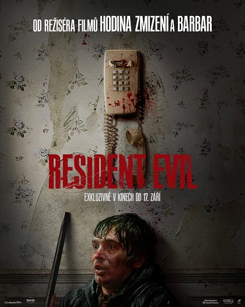
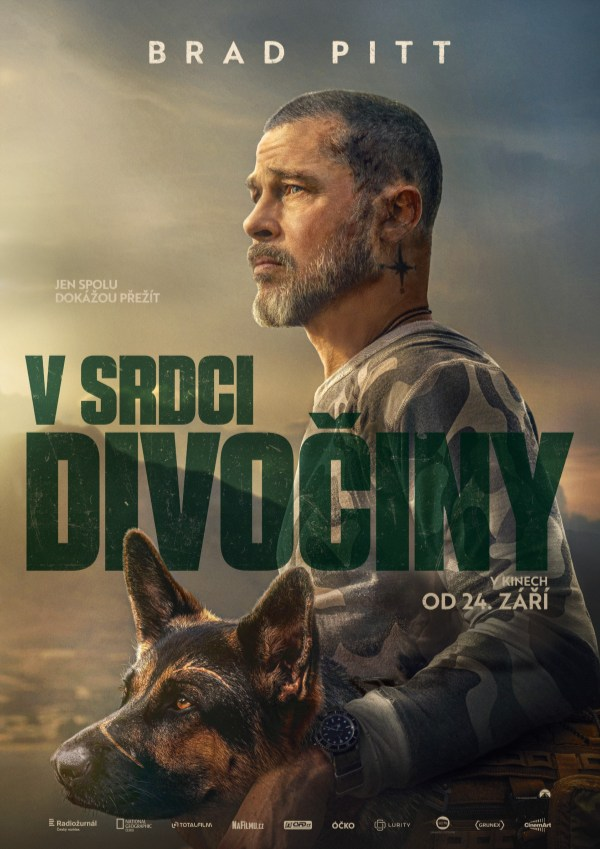
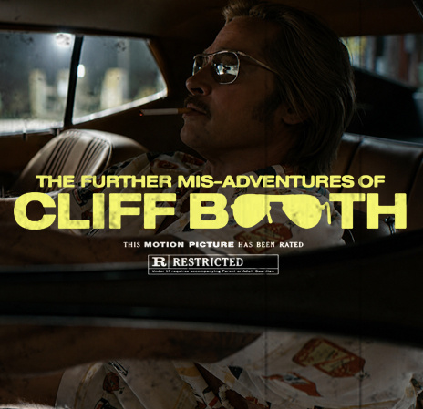

Filmíky
Tady se dozvíte o nejnovejsich filmech
Nově v kinech
Resident evil
- Horor, Sci-Fi, Akční
- USA 2026 90 min
- Resident Evil sleduje jedinou noc, kdy se obyčejný kurýr Bryan (Austin Abrams) vydává doručit zásilku do Raccoon City – města, které se mezitím propadá do naprostého chaosu po úniku smrtícího viru. Jak se ulice zaplňují nakaženými a realita se mění v noční můru, Bryan je nucen bojovat o přežití, improvizovat s omezenými prostředky a čelit nejen hordám nemrtvých, ale i rozpadu společnosti kolem sebe. Izolovaný, bez pomoci a bez jasného vysvětlení toho, co se vlastně stalo, se postupně dostává hlouběji do centra katastrofy – a zjišťuje, že za nákazou stojí něco mnohem děsivějšího, než si dokázal představit.

V srdci divočiny
- Akční Dobrodružný Drama Thriller
- USA 2026 101 min
- James Belmont (Brad Pitt), penzionovaný vojenský expert, se se svým psem Odinem (německý ovčák Uber), taktéž válečným veteránem, vydává na výlet do aljašské divočiny. Jejich výprava se povážlivě zkomplikuje, když James vinou zdravotní indispozice nezvládne pilotování malého letadla a havaruje. Ti dva už v minulosti ve válečné zóně dokázali, že se jeden na druhého můžou stoprocentně spolehnout. Zvládnou ale spolu zdolat nástrahy aljašské divočiny, kde číhá smrtelné nebezpečí na každém kroku? A poté, co oba letecká havárie nepěkně pocuchala? A protože jedinou nadějí na přežití je pro oba návrat do civilizace, musí se vydat na cestu, která se promění v boj s přírodou v její nejdrsnější podobě. Když ale máte po boku dobrého parťáka, lze zvládnout cokoliv.

Novinky v Hollywoodu
Trailer k filmu Cliff Booth od Netflixu si Brad Pitt hravě utahuje z Leonarda DiCapria.
Právě vyšel první kompletní trailer k filmu Davida Finchera a Quentina Tarantina s názvem „Další nezdary Cliffa Bootha“.Film je výsledkem unikátní spolupráce – scénář napsal Quentin Tarantino a režie se ujal David Fincher .
Film Další nezdary Cliffa Bootha bude od 25. listopadu exkluzivně dva týdny uveden v kinech Imax po celém světě a poté bude mít premiéru na Netflixu 23. prosince.

Tady budou filmiky